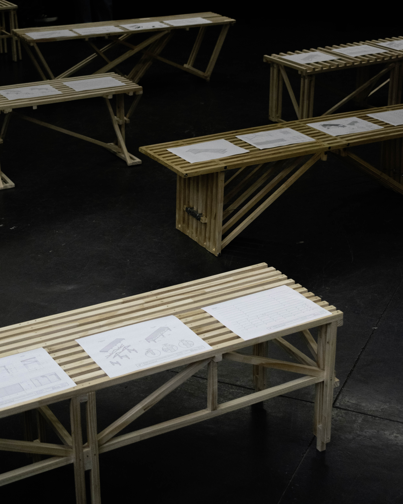
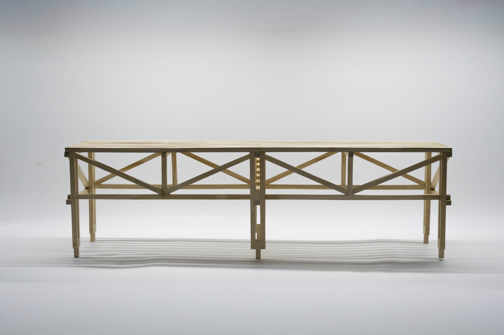
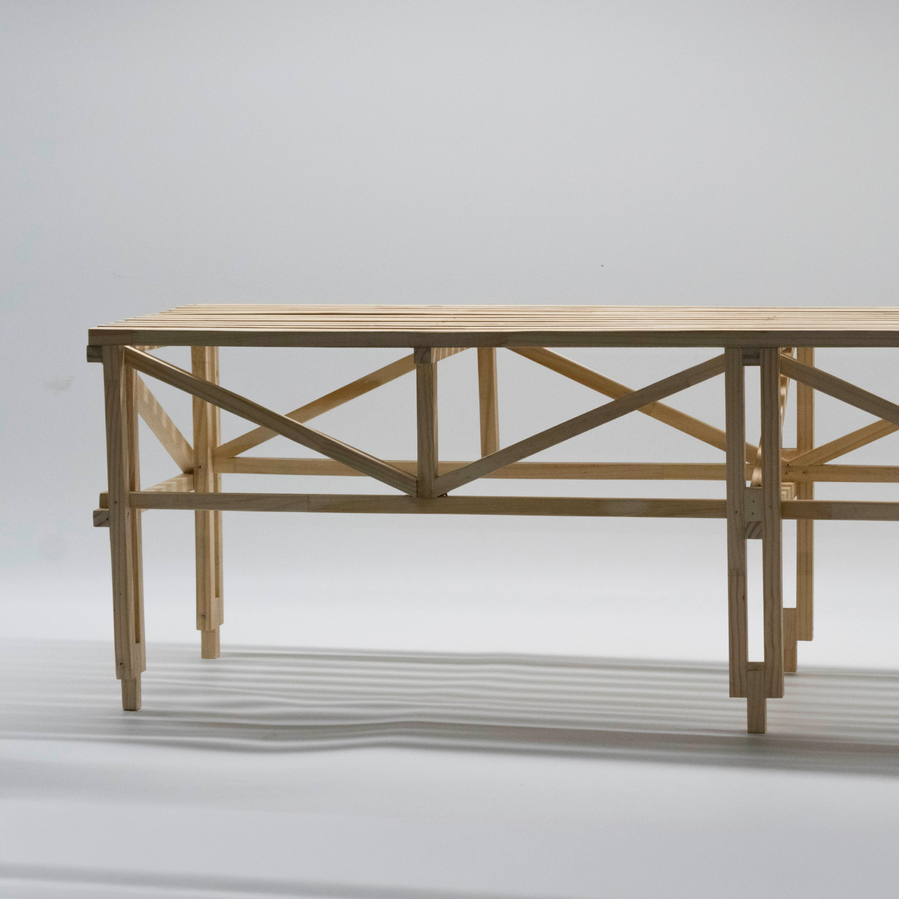
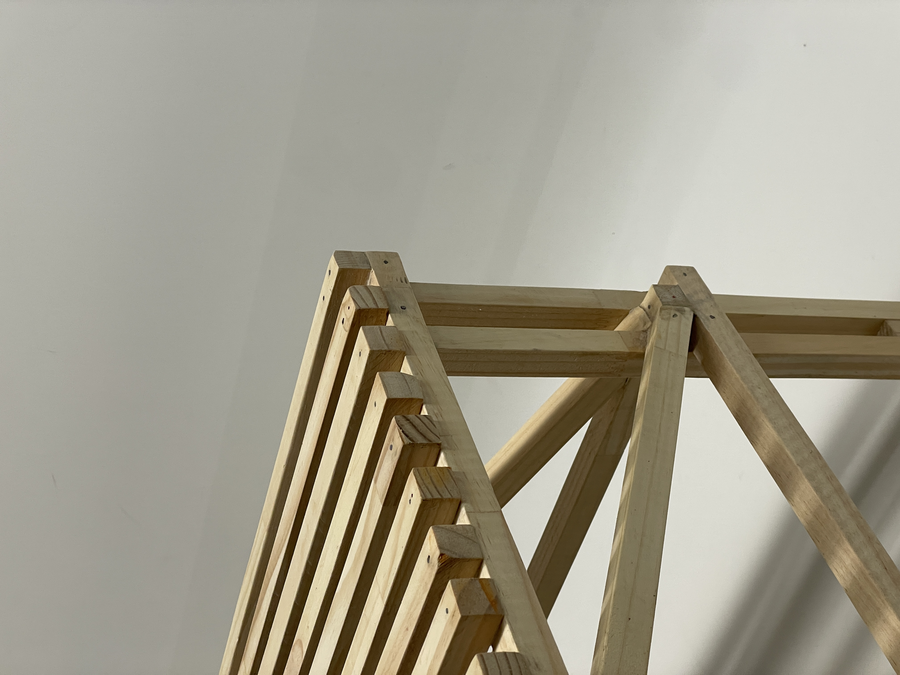
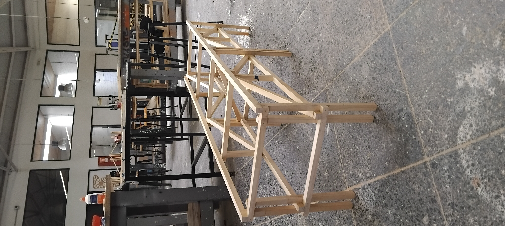
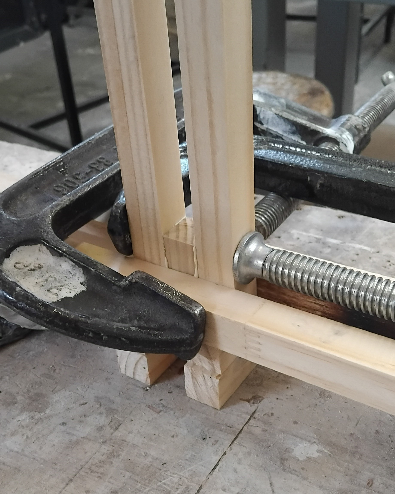
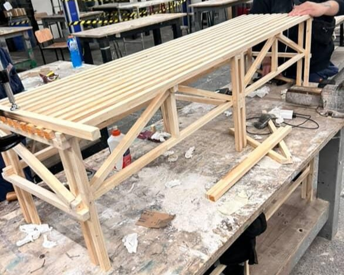
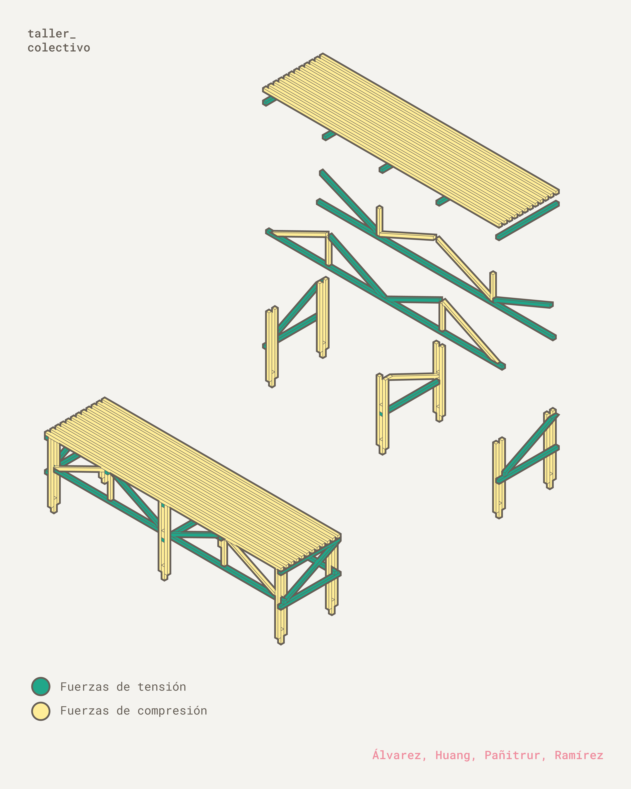

Esta banca nació como una manera de entender el funcionamiento de las fuerzas estructurales. Para lograrlo se nos indicó crear un mobiliario que tuviera dimensiones mínimas de 150cm de largo, 40cm de ancho y 42cm de alto. Además de poner la limitante de utilizar 12 Junquillos de 19mm de lado como material
Luego de diversas pruebas se comenzó la fabricación de la "Banca Reticulada", que como bien dice su nombre nos basamos en este tipo de estructuras. Por lo mismo pudimos optimizar materiales, hacer uniones más simples y lograr soportar hasta 300Kg.
Trabajo realizado en conjunto de: Isidora Alvarez - Jiamin Huang - Dayana Pañitrur
| Herramientas: | Autocad, Rhino 8 |
| Tiempo de Desarrollo: | 2 Semanas |
| Materiales: | Junquillos 19mm x 19mm, Clavos 1 1/4", Clavos 1 3/4", Cola Fría |
| Origen: | Taller Colectivo 2025-2. |
Haz clic en una miniatura para visualizarla a gran escala a la izquierda.






